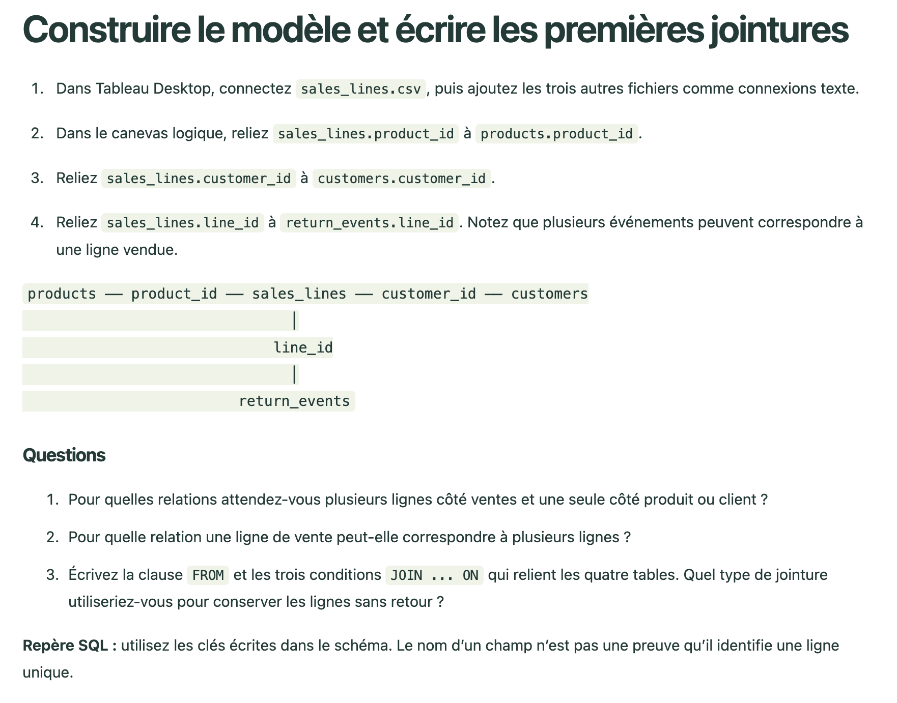
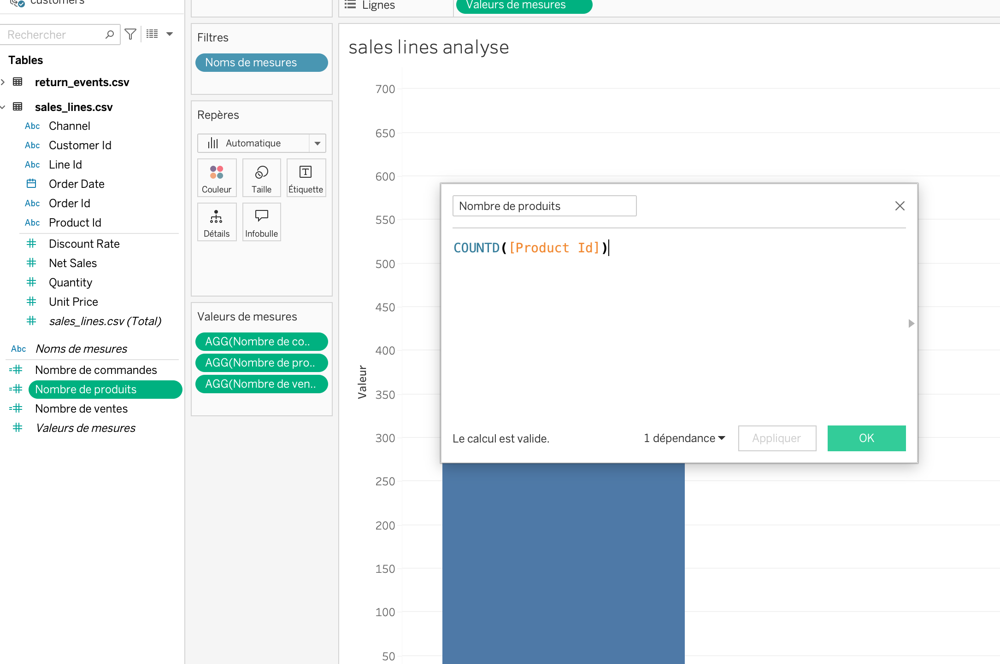
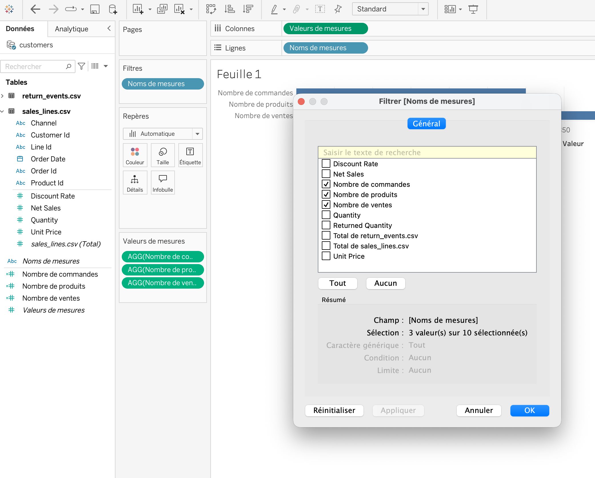
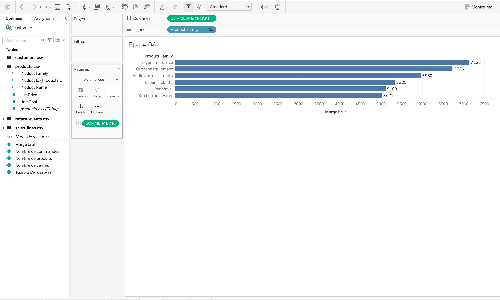
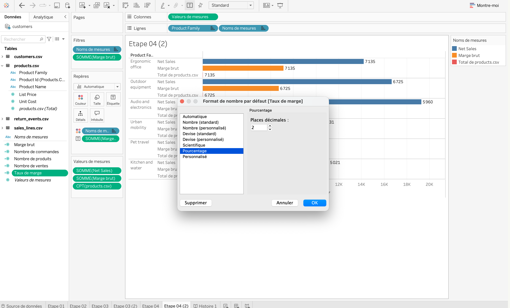
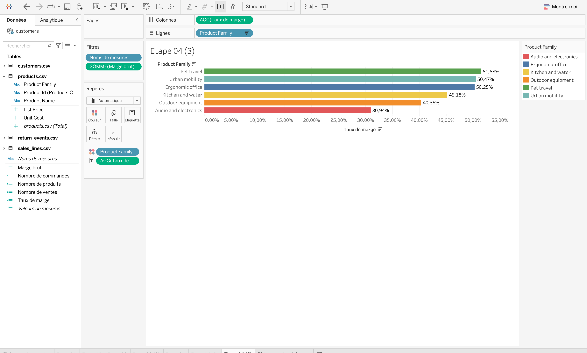

Correction · TP SQL et relations
Décider d’une gamme de produits
Correction détaillée avec les formules Tableau, les contrôles SQL et les résultats de référence. À consulter après avoir réalisé le TP.
Correction illustrée · À consulter après votre essai
Reproduire les contrôles et les analyses dans Tableau
Cette correction propose une démarche de référence, des formules à saisir et des résultats pour vérifier vos vues. Les captures proviennent du classeur réalisé pour ce TP. Les intitulés anglais des champs sont conservés tels qu’ils apparaissent dans les CSV.
Les captures montrent plusieurs étapes de construction. Certaines vues intermédiaires servent à régler un champ ou un format ; elles ne constituent pas toutes un résultat final à remettre. Cliquez sur une capture pour l’ouvrir à sa taille d’origine.
1. Vérifier le grain et les clés
Le modèle repose sur quatre niveaux : une ligne par vente dans sales_lines, une ligne par produit dans products, une ligne par client dans customers et un événement dans return_events. Les clés de liaison sont product_id, customer_id et line_id. La relation vers les événements de retour peut être un-vers-plusieurs : ne joignez pas les événements bruts avant d’avoir vérifié leur cardinalité.

La table des ventes est au centre : un produit et un client se rattachent à chaque ligne de vente ; plusieurs événements de retour peuvent se rattacher à une même ligne.
Contrôles attendus : 690 lignes de vente, 300 commandes distinctes, 24 produits, 120 clients, 98 événements de retour sur 75 lignes vendues distinctes, pour 101 unités retournées.
2. Créer des comptages distincts de contrôle
Dans Tableau, pour chaque indicateur : faites un clic droit dans le volet Données, choisissez Créer → Champ calculé, donnez-lui le nom indiqué, saisissez la formule, puis vérifiez que Tableau confirme sa validité.
| Nom du champ | Formule Tableau | Résultat attendu |
|---|---|---|
| Nombre de commandes | COUNTD([Order Id]) | 300 |
| Nombre de produits | COUNTD([Product Id]) | 24 |
| Nombre de ventes | COUNTD([Line Id]) | 690 |
COUNTD compte les valeurs distinctes d’un champ. Pour les ventes, COUNTD([Line Id]) compte les lignes de vente, tandis que COUNTD([Order Id]) compte les commandes, qui peuvent contenir plusieurs lignes.

Le nom du champ calculé facilite sa réutilisation dans la vue ; la formule réalise le comptage distinct. Reproduisez la même méthode pour les commandes et les lignes vendues.
Pour afficher les trois indicateurs ensemble, placez Noms de mesures et Valeurs de mesures dans la vue, puis filtrez Noms de mesures afin de ne garder que les trois champs de comptage. Ajoutez éventuellement une dimension dans la vue pour ventiler les effectifs, mais gardez d’abord une feuille sans dimension : les totaux doivent alors être 300, 24 et 690.

Le filtre Noms de mesures choisit quelles mesures apparaissent dans la vue. Il ne filtre pas les lignes de vente comme le ferait un filtre sur une dimension.
3. Calculer les ventes et la marge brute par famille
Pour construire la vue des ventes, placez Product Family sur Lignes et la somme de Net Sales sur Colonnes. Ajoutez la somme de Quantity dans une seconde vue ou dans l’infobulle afin de ne pas confondre valeur vendue et volume d’unités.
Créez le champ calculé au niveau de la ligne Marge brute :
[Net Sales] - [Quantity] * [Unit Cost]Net Sales étant déjà net des remises dans ce jeu de données, ne soustrayez pas à nouveau la remise. Dans une vue par famille, Tableau agrège ensuite la marge avec SUM([Marge brute]). Placez Product Family sur Lignes et SUM([Marge brute]) sur Colonnes, triez en ordre décroissant et activez les étiquettes.

La marge brute totale la plus élevée est celle d’Ergonomic office, environ 7 134,73. Ce n’est pas la famille qui a le plus de ventes nettes : Audio and electronics arrive première en ventes, avec 19 261,58.
| Famille | Ventes nettes | Unités | Marge brute estimée | Taux de marge |
|---|---|---|---|---|
| Audio and electronics | 19 261,58 | 228 | 5 959,58 | 30,94 % |
| Outdoor equipment | 16 667,72 | 193 | 6 724,72 | 40,35 % |
| Ergonomic office | 14 198,73 | 188 | 7 134,73 | 50,25 % |
| Kitchen and water | 11 112,69 | 195 | 5 020,69 | 45,18 % |
| Urban mobility | 10 563,07 | 238 | 5 331,07 | 50,47 % |
| Pet travel | 9 913,39 | 223 | 5 108,39 | 51,53 % |
Comparer les segments et les canaux
Pour répondre à la question sur les profils clients, ajoutez la table customers, puis groupez par segment et famille. Ici, le canal est également inclus afin de pouvoir comparer des périmètres identiques :
SELECT c.segment, s.channel, p.product_family,
SUM(s.net_sales) AS net_sales,
SUM(s.quantity) AS units_sold
FROM sales_lines AS s
JOIN products AS p ON p.product_id = s.product_id
JOIN customers AS c ON c.customer_id = s.customer_id
GROUP BY c.segment, s.channel, p.product_family
ORDER BY net_sales DESC;La combinaison qui pèse le plus dans les ventes est Individual · Website · Audio and electronics (6 769,72). Pour examiner un seul canal, ajoutez par exemple WHERE s.channel = 'Website' avant GROUP BY. Les comparaisons entre segments doivent conserver le même canal, car les canaux n’ont pas le même volume ni le même mix de produits.
Le classement par volume diffère aussi du classement par ventes : Urban mobility totalise le plus d’unités (238), tandis qu’Audio and electronics arrive première en ventes nettes (19 261,58). Le prix moyen des produits contribue à cet écart.
4. Calculer et formater le taux de marge
Créez le champ calculé Taux de marge avec le rapport entre la marge totale et les ventes nettes totales :
SUM([Marge brute]) / SUM([Net Sales])Glissez Product Family sur Lignes et Taux de marge sur Colonnes. Triez du taux le plus élevé au plus faible, affichez les étiquettes et colorez par famille si cela aide la lecture. Pour afficher des pourcentages : clic droit sur Taux de marge dans le volet Données → Propriétés par défaut → Format de nombre → Pourcentage. Choisissez deux décimales. Le taux est un ratio de sommes ; une moyenne simple des taux calculés ligne par ligne donnerait un résultat différent.

La fenêtre ouverte montre le réglage de format par défaut à appliquer au champ. La vue en arrière-plan est encore en cours de construction : ne l’utilisez pas comme résultat final ni pour valider les valeurs des séries.
Si toutes les barres affichent la même valeur, vérifiez la fiche Repères : une mesure placée sur Étiquette peut remplacer l’étiquette de chaque série. Retirez cette mesure et activez plutôt les étiquettes sur les valeurs de mesures, ou construisez une feuille par indicateur. Contrôlez aussi que le filtre Noms de mesures contient les séries voulues.

Pet travel présente le taux de marge le plus élevé (51,53 %), tandis qu’Audio and electronics a le taux le plus faible (30,94 %). Le meilleur taux ne signifie pas la marge totale la plus élevée.
5. Comprendre l’effet d’une jointure avec les retours
La jointure brute ventes → événements de retour répète une ligne de vente lorsqu’elle a plusieurs événements. Un comptage distinct des lignes peut encore sembler correct, mais les sommes des ventes et des coûts sont alors gonflées. Dans SQL, agrégez d’abord les événements à une ligne par line_id, puis joignez ce résultat à sales_lines :
LEFT JOIN (
SELECT line_id, SUM(returned_quantity) AS returned_units
FROM return_events
GROUP BY line_id
) AS r ON r.line_id = s.line_idLes bonnes réponses de diagnostic sont donc : COUNT(*) compte les lignes matérialisées après jointure ; COUNT(DISTINCT line_id) retrouve les lignes vendues distinctes ; SUM(net_sales) peut être gonflé par la répétition. Une relation logique Tableau n’équivaut pas à une jointure physique qui produit directement une table répétée.
| Famille | Unités retournées | Taux unitaire |
|---|---|---|
| Pet travel | 33 | 14,8 % |
| Audio and electronics | 29 | 12,7 % |
| Outdoor equipment | 13 | 6,7 % |
| Kitchen and water | 13 | 6,7 % |
| Ergonomic office | 6 | 3,2 % |
| Urban mobility | 7 | 2,9 % |
Le taux est unités retournées / unités vendues, après agrégation des événements par ligne. Pet travel a le taux le plus élevé ; il ne faut pas confondre 98 événements, 75 lignes concernées et 101 unités retournées.
6. Estimer la marge des unités conservées après retour
Cette dernière estimation dépend d’hypothèses explicites : le remboursement se fait au prix net moyen de la ligne et les articles retournés peuvent être remis en stock. Agrégez d’abord les événements par ligne, puis calculez la part du chiffre d’affaires correspondant aux unités conservées. Vérifiez également que le nombre retourné ne dépasse pas la quantité vendue.
SELECT p.product_family,
SUM(s.quantity - COALESCE(r.returned_units, 0)) AS kept_units,
SUM(1.0 * s.net_sales
* (s.quantity - COALESCE(r.returned_units, 0)) / s.quantity) AS kept_sales_estimate,
SUM(p.unit_cost * (s.quantity - COALESCE(r.returned_units, 0))) AS kept_cost,
SUM(1.0 * s.net_sales
* (s.quantity - COALESCE(r.returned_units, 0)) / s.quantity
- p.unit_cost * (s.quantity - COALESCE(r.returned_units, 0))) AS kept_margin_estimate
FROM sales_lines AS s
JOIN products AS p ON p.product_id = s.product_id
LEFT JOIN (
SELECT line_id, SUM(returned_quantity) AS returned_units
FROM return_events
GROUP BY line_id
) AS r ON r.line_id = s.line_id
GROUP BY p.product_family;| Famille | Ventes conservées estimées | Unités conservées | Marge conservée estimée |
|---|---|---|---|
| Ergonomic office | 13 889,08 | 182 | 6 968,08 |
| Outdoor equipment | 15 522,42 | 180 | 6 270,42 |
| Audio and electronics | 16 816,66 | 199 | 5 258,66 |
| Urban mobility | 10 255,32 | 231 | 5 174,32 |
| Kitchen and water | 10 256,96 | 182 | 4 655,96 |
| Pet travel | 7 923,41 | 190 | 4 256,41 |
Dans Tableau, le même principe consiste à créer d’abord un résultat agrégé des retours au grain Line Id, puis à calculer ventes et coûts des unités conservées. Évitez de joindre directement plusieurs événements de retour aux ventes avant les sommes.
La marge conservée estimée n’est pas une marge comptable constatée. Elle suppose un remboursement au prorata et une remise en stock ; les frais de traitement, transport, destruction et autres charges ne sont pas disponibles.
7. Conclure sans dépasser les données
Les résultats ne justifient pas d’augmenter automatiquement le budget audio au seul motif que cette famille a les ventes nettes les plus élevées. Elle présente un taux de marge plus faible que les autres familles et un taux de retour unitaire de 12,7 %. Ergonomic office apporte la marge brute totale la plus élevée ; Pet travel présente le taux de retour unitaire le plus élevé. Une recommandation prudente consiste à tester une promotion limitée et à suivre la marge incrémentale, tout en examinant les retours audio et Pet travel.
Précisez que cette analyse ne comprend pas les coûts marketing, de transport ni les frais opérationnels. La marge après retours est une estimation conditionnelle aux hypothèses de remboursement et de remise en stock ; ce n’est pas une marge comptable constatée.